Горец
«Должен остаться только один»
Майкл
«Встречаются Маклауд и колобок. Колобок говорит: "Должен остаться только один!"»
Анекдот
«From the dawn of time we came, moving silently down through the centuries. Living many secret lives, struggling to reach the time of the Gathering, when the few who remain will battle to the last. No one has ever known we were among you..... until now.»
Хуан Санчес Виллья-Лобос Рамирес
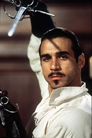
ГГ сериала
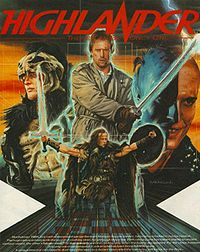
Эпичная вселенная, повествующая о воинах-бессмертных, коротающих досуг укорачиванием друг друга на голову. Начало было положено винрарном фильмом Рассела Малкахи "Горец" с Кристофером Ламбертом в главной роли и была продолжена винрарным же сериалом с любимцем школоты 90-х Эдрианом Полом, ставшим по-видимому, маскLотом сериала.
Первый фильм
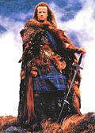
Коннор Маклауд из клана Маклаудов
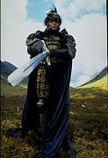
Кленси Браун смотрит на тебя как Курган
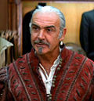
Рамирес
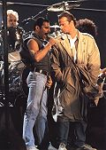
Маклауд смотрит на Фредди как на педика
Сюжет в пяти словах: There can be only one!
А если подробнее, то родился 400 лет назад в горах Шотландии Коннор Маклауд, жил в племени, носил килт, питался кореньями, и как и всякое подобное быдло, сражался с соседними племенами. В одном из таких сражений его убили, но ему удалось выжить и он стал Бессмертным (однако школота 90-х называла Горцами всех бессмертных). В племени его сочли Сотоной и изгнали. После этого его подобрал некто Рамирез (в исполнении сэра Шона Коннери), который и объяснил ему суть Бессмертной войны:
Плюсы:
- Можешь жить сколько хочешь, убить тебя почти никак нельзя, только отрезав голову
- Ты не заболеешь никаким сифилисом, СПИДом, гонореей и прочими атипичными пневмониями
- Срезав череп такому же Бессмертному, вберёшь в себя его опыт и знания
Минусы:
- Спокойно не поживёшь - за тобой будут охотиться другие Бессмертные, дабы забрать твою экспу
и лут, посему нужно постоянно тренироваться
- Ты переживёшь всех своих близких и друзей - они умрут от старости
- У тебя не будет детей (Битарды, школотоненавистники и пикаперы скорее запишут это в плюс)
Вот такие дела. Ну а дальше прилагаются все остальные штампы любого боевика тех времён - эпичный злодей Курган, старые мэдскиллзовые спецэффекты, сюжет о баталии Бобра с Ослом и пр и пр и пр. Несмотря на то, что в те времена фэнтези было много и навалом (тот же Конан), этот фильм вышел вином. Почему же?
- Годный саундтрек от Квинов. Очень годный, Квины целый альбом ему посвятили. Этот саундтрек будет визитной карточкой вселенной ещё очень долго.
- Хороший подбор актёров. Изгоевский Маклауд, хитрый тролль Рамирес, брутальный Курган некоторое время были основными персами дворовой школоты.
- Какие-никакие спецэффекты. По тем временам ещё как-то смотрелось
- Собственно, сама вселенная. Интересный сюжет, интересная история.
Как это ни странно, фильм не имел открытого финала - Курган был как бы последним, и победив его, Горец получил свой приз - жить обычно наравне с людьми. Но хитрожопые продюсеры углядели профит и издали мало погодя ряд продолжений, конечно, годных, но увы, ознаменовавших приход серии в состояние УГ. Были сняты вторая и третья часть, обе с Ламбертом (и одна даже с Рамиресом), но они были спорными, на любителя. Но серии была дана новая жизнь, в виде...
Сериал с Эдрианом Полом
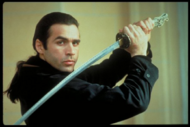
Дункан маклауд из клана Маклаудов
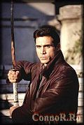
Винрарный сериал с кучей сезонов, историй и новым героем - Дунканом Маклаудом, приходящимся Коннору родственником. В пилотной серии Коннор передаёт эстафетную палочку Дункану, дабы на десятилетие съебаться из вселенной, чтобы посниматься в Мортал Комбате и прочих винах. Смысл сериала тот же - "Остаться должен только один". Чем сериал доставлял?
- Новый герой вписался отлично. Но это породило ряд срачей, о которых чуть позже
- Куча и куча исторических флешбеков, согласно которым Дункан побывал за свою недолгую жизнь почти везде
- Саундтрек Квинов остался на месте, хотя сам Фредди Меркьюри уже давно почил в бозе
- Спецэффекты стали лучше, разрушения в городе от передачи экспы от одного Бессмертного другому - больше
- Подробнее раскрыта драма Бессмертных - про стареющих и погибающих друзей
- И многое другое, кто помнит - дополнит Минусы тоже присутствовали:
- В конце сериал скатился в УГ. Закончились вещества у сценаристов или просто вселенная исчерпала себя - причину выбирайте сами
- Другой причиной скатывания был уход многих персов, например Ричи и Фицкерна
- Разумеется, ляпы и срачи по оружию и эпохам, напоминающие реконструкторские. Один из них описан в статье Катана(К слову, Катаной звали злодея из второй части Горца, которая с Ламбертом).
- Жестокости стало очень мало. Например, момент отделения головы никогда не показывался.
- Помимо всего прочего, сериал запомнился не только самим Дунканом, но и другими второстепенными персами:
- Джо Доусон - безногий (как и актёр, его игравший) владелец забегаловки именисебя, один из секты Наблюдателей - те, кто якобы наблюдают за баталиями Бессмертных, но никогда не вмешиваются. Тем не менее, Джо постоянно этот принцип нарушал, обеспечивая ГГ инфой о любом появившемся на горизонте враге, за что порой получал люлей от собственных соратников. Увы, был убит сценаристами в треше "Источник"
- Ричи Райн - на начало сериала гопник, мелкий воришка, чуть позже - ученик Маклауда. Зачастую получал пизды и любил искать на жопу приключений, но позже (после выпиливания нескольких десятков Бессмертных, ага) из нубства вырос и стал крошить врагов не хуже учителя. По воле тупых сценаристов был бездарно убит Маклаудом в конце одного из сезонов.
- Митос - древнейший Бессмертный, тролль, лжец, не девственник, внезапно оказавшийся одним из Всадников Апокалипсиса. Позже примкнул к Наблюдателям, став зав. отделом по нахождению Митоса. „Я — ответственный за поиск себя, и я слежу за тем, чтобы меня никогда не нашли“.
- Аманда - фапабельная воровка, любовница ГГ. Находит приключения на свою задницу, Маклауд, как истинный джентльмен, из этих приключений ее вытаскивает, попутно прививая тезис „Воровать плохо, надо жить честно“. Про неё отдельно сняли целый спин-офф, оказавшийся, по мнению горцефагов, тем ещё фуфлом.
- Тесса Ноэль - девушка Маклауда в первом сезоне и начале второго. В целом - сферическая не-ТП в вакууме. До встречи с Дунканом была экскурсоводом на прогулочном катере (где, собственно, и познакомилась с Маком), потом, в связи с достатком финансов, стала скульптором и даже выставлялась. Причем периодически ее можно застать с автогеном, что намекает на ее мастерство в обработке металла. Была убита в эпизоде «Тьма» вместе с Ричи, однако же Райан воскрес, а вот Тесса - нет.
- Хортон - по мнению Рукипедии, "один из опаснейших смертных врагов Маклауда". Наблюдатель, в рабочее и свободное от работы время занимается тем, что выслеживает (по базе данных Наблюдателей, видимо) и убивает Бессмертных. Да не один, а толпой. Метод - застрелить и оттяпать башку, пока не очухался. Маклауд его убивал ажно 3 раза.
- Ариман - зороастрийский демон (w:Ариман), какого хрена оказался в Горце, не ясно. Может практически все: от смены облика до воскрешения отдельных персов из мертвых. Заставил Мака не только высрать пару кирпичей, но и, по сути, подставил Ричи под удар. Хотя Мак, как истинный рыцарь, винит во всем себя, мы-то знаем...
- Темный Дункан - по сути, не перс, а состояние души. Цимес в том, что накапливая экспу от особо отмороженных Бессмертных, рискуешь стать таким же отмороженным. Так и произошло с другом Маклауда Колтеком, индейским святым, посвятившим свою жизнь борьбе со злом. Парень слетел с катушек, и Маку пришлось его убить. После этого с катушек слетел уже сам ГГ, превратившись в темное подобие себя: не потеряв ни капли харизмы и обаяния, Маклауд стал жестоким и безжалостным. С одной стороны, доставляет, с другой - от такого мурашки по коже...
Особняком стоят последние два эпизода шестого сезона - «Не быть» и «Быть». В них Маклауду, окончательно скатившемуся в депрессию на фоне Сбора, постоянных стычек с Наблюдателями и прочей фигни, является Фитцкерн, давний друг, убитый бессмертным Каласом, и показывает ему т.н. «мир без Дункана Маклауда», то есть вариацию на тему «что было бы, если бы тебя не было». В общем и целом, нелицеприятное будущее: Хортон с дружками захватили власть среди Наблюдателей, Джо стал бомжем, Тесса в этом мире любящая жена и мать, забросившая ради детей искусство, Митос присоединился к Всадникам, взяв себе в ученики Ричи, а затем обезглавив... Очевидно, что все это имело неплохой терапевтический эффект, по крайней мере, Маклауд уверился в том, что нужен своим друзьям.
Сериал, конечно, затянулся надолго, и закрыли его относительно вовремя. Однако вселенная Горца заканчиваться не собиралась.
Что же далее?
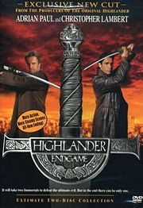
Оба Маклауда в сборе. Коннор, правда, уже не тот
Далее наснимали унылый спинофф про Аманду, та же студия сняла мультик про Квентина Маклауда, борющегося в фоллаутном будущем с Чёрным Властелином (Рамирес в наличии) и Горец: Конец игры, в котором было решено поставить точку в холиваре "Коннор-Дункан", да и в самой истории. Про последний стоит рассказать отдельно. Фильм был признан фанатами фейлом - ещё бы, ведь они убили Коннора, сволочи; сюжет был слабоватым (очередное УГ про борьбу с бессмертным, обладающим самым большим количеством экспы), и главный фейл - НЕ БЫЛО МУЗЫКИ КВИНОВ. С другой стороны, фильм был выдержан в стиле сериала (с флешбэками) да и наличие обоих героев доставило. Поговаривали, что прежде чем запилить сей высер, создатели провели опрос среди фанов, кого оставить в живых - Коннора или Дункана? Если эти слухи были правдивы, то следует сделать вывод, что школоты среди голосовавших было больше и оставили маскота, а не тру. Тупой школоте следовало бы проголосовать за оставление ОБОИХ.
Значимость и срачи
Сериал оставил после себя много мемов, главный из которых само понятие "Маклауд", ставшее синонимом слову "Бессмертный". Также понятие "Маклаудство" используется в ИРЛных ролевых играх (см. Страйкбол), КО поясняет, что Маклаудом называют человека, которого "убили", но он отказывает это признавать. Маклаудов в подобной среде очень не любят (да вспомнить хотя б детские игры в войнушку и постоянные срачи "Ты убит-нет не убит" с обязательно сломанной после этого об чью-нибудь голову воздушкой).
- Срачи на тему Горца возникали самые обычные:
- Главный - кто же лучше - Коннор или Дункан? С обоих сторон было много фанов
- Вышеупомянутые срачи по эпохам и оружию
- Дункан vs Митос
- Тесса vs остальные тян Маклауда
- А что будет, если срубить башку на Святой Земле?
Другие дополнит анон. Автор не лазил по их форумам так часто
Будущее Хайландера
После "Конца Игры" было всё же решено продолжать вселенную. Был снят унылейший фильм "Источник", который не спасло ничего, даже наличие старых добрых актёров сериала и попытки перепеть старые квиновские темы какими-то говнарями. Готовится также перезагрузка первой части и продолжение "Источника". Япошки сняли неплохое онемэ (с гуро и расчленёнкой), которое можно считать годным за стилистику ГГ, похожего на Коннора и неплохие баталии в опять же фоллаутном мире будущего. Также будет сделана игра, но что это будет - никто не знает. А на игру про Горца недавно положили довольно большой член сам великий фаппер издатель игры. так что негодуем и тренируемся отрезать головы на друзьях пока не ана(л)нсируют новый высер.
Галерея
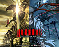
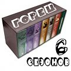
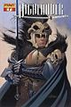
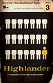
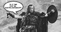
Алсо
- В этой стране горец - более-менее политкорректное название расового северокавказского горного
козла орла.
- Iron Maiden записали винрарную песню по сабжу - "Clansman".
- В винрарной игре TF2 классу подрывник, недавно дали разблокируемые оружия, одним из которых является меч и называется "Eyelander", что как-бэ намекает. В отечественном варианте это тупо "Горец". Причём действует по такому принципу, сначала ваше здоровье чуть-чуть ухудшается, но с каждой отрубленой
вражеской фражеской головой, вы получаете здоровье и скорость. И так до 4-х голов.
- В некоей книжке "Повелитель теней", которую написал некто Петр Верещагин, присутствует некий персонаж второго плана по имени Рэйден (якобы тот самый). После прочтения более половины книги, выясняется, что его настоящее имя Коннор, и происходит это, когда к нему приходит его учитель Рамирез, грит, что хватит тусить с б-гами и зовет его обратно (видимо, рубить бошки).
- Существует так же сериал "Бессмертный" с Лоренцо Ламасом в главной роли, содранный почти полностью с Горца. Разница лишь в том, что там герой сражается не с другими бессмертными, а с демонами.